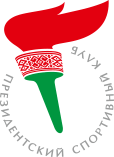

«Спорт — это высочайший уровень дипломатии!
Триумф спортсмена преображает страну в глазах мирового сообщества, формируя ее положительный имидж.
Это демонстрация успехов развития государства.»
Президент Республики Беларусь
АЛЕКСАНДР ГРИГОРЬЕВИЧ ЛУКАШЕНКО
«Будущее белорусского спорта, как и будущее страны в целом, в наших руках.
Делая шаг навстречу спорту и активному образу жизни, каждый из нас вносит свой вклад в здоровье нации.
Здоровая нация — истинное богатство страны и самая громкая ее победа!»
ДМИТРИЙ АЛЕКСАНДРОВИЧ ЛУКАШЕНКО
Председатель центрального совета республиканского государственно-общественного объединения «Президентский спортивный клуб»
* Документы сохранять в UTF-8 без BOM
* Следить за типографикой: правильные кавычки (« »), длинные тире ( — ). Для ввода с клавиатуры использовать http://ilyabirman.ru/projects/typography-layout/
* Нумеровать номинации
* В заголовоках и везде никакого капса
* Таблицы только для табличных данных. Если дана одна колонка данных, то верстать списком.
В таблицах:
Заговолки тегом «th»
Класс «full-width» для 100% ширины
Класс «h-line» для рисования горизонтальных разделителей
| Победитель | Спортивные достижения |
|---|---|
| Женская команда по художественной гимнастике | бронзовый призер чемпионата Европы, победитель и серебряный призер Кубка мира |
| Лауреаты | Спортивные достижения |
| Национальная женская команда по настольному теннису | бронзовый призер чемпионата мира 2006 года |
| Женская легкоатлетическая команда в эстафетном беге 4×400м | серебряный призер чемпионата Европы |
| Победитель | Спортивные достижения |
|---|---|
| Дмитрий Дащинский | фристайл, серебряный призер Олимпийских игр в Турине |
| Лауреаты | Спортивные достижения |
| Андрей Рыбаков | тяжелая атлетика, чемпион Европы и мира 2006 г., рекордсмен мира |
| Иван Тихон | легкая атлетика, метание молота, чемпион Европы и серебряный призер Кубка мира 2006 г. |
В таблицах:
Для ячеек с цифровыми значениями использовать класс «numeric»
| Победитель | Спортивные достижения | Кол-во голосов |
|---|---|---|
| Футбольный клуб БАТЭ | чемпион Республики Беларусь 2008 года, участник группового этапа Лиги Чемпионов УЕФА сезона 2008-2009 годов. | 371 440 |
| Лауреаты | Спортивные достижения | Кол-во голосов |
| Национальная команда Республики Беларусь по баскетболу (женщины) | 6-е место на Играх XXIX Олимпиады 2008 года в Пекине в соревнованиях по баскетболу. | 261 094 |
| Национальная команда Республики Беларусь по гребле на байдарках и каноэ (байдарка-четверка) | победитель Игр XXIX Олимпиады 2008 года в Пекине в соревнованиях по гребле на байдарках и каноэ на дистанции 1000м (в составе Вадима Махнева, Романа Петрушенко, Артура Литвинчука, Алексея Абалмасова). | 227 988 |
| Победитель | Спортивные достижения | Кол-во голосов | |
|---|---|---|---|
| Национальная команда Республики Беларусь по баскетболу (женщины) | 4-е место на чемпионате мира 2010 года по баскетболу | 354 660 | (26,42 %) |
| Лауреаты | Спортивные достижения | Кол-во голосов | |
| Футбольный клуб БАТЭ | чемпион Республики Беларусь 2010 года, участник раунда плей-офф Лиги Европы УЕФА сезона 2010-2011 годов | 259 248 | (19,31 %) |
| Молодежная сборная по футболу | выход в финальную часть чемпионата Европы среди молодежных команд | 227 988 | (14,38 %) |
| Номинанты | Спортивные достижения | Кол-во голосов | |
| Экипаж мужской каноэ-двойки | серебряный призер Чемпионата мира 2010 года по гребле на байдарках и каноэ | 139 888 | (10,42 %) |
| Экипаж мужской байдарки-четверки | серебряный призер чемпионата мира 2010 года по гребле на байдарках и каноэ | 138 733 | (10,34 %) |
| Национальная команда Республики Беларусь по гимнастике художественной в групповых упражнениях | серебряный призер чемпионата мира 2010 года в групповых упражнениях | 115 415 | (8,60 %) |
| Гандбольный клуб «Динамо-Минск» | чемпион Республики Беларусь 2010 года, участник группового раунда Лиги чемпионов | 72 303 | (5,39 %) |
| Мужская сборная команда Республики Беларусь по настольному теннису | серебряный призер чемпионата Европы 2010 года в командном первенстве | 69 048 | (5,14 %) |
Таблицы только для табличных данных. Если дана одна колонка данных, то верстать списком.
Победитель
Лауреаты
Победитель
Лауреаты
* Если ФИО идет после титулов — выделять ФИО жирным [strong].
* Если сначала ФИО, а потом «описание», после ФИО длинное тире, жирным не выделять. Cм. пример выше.
| Команда | И | В | ВО | П | ПО | Ш | Р | О |
|---|---|---|---|---|---|---|---|---|
| Россия | 3 | 3 | 0 | 0 | 0 | 39:2 | 37 | 9 |
| Минск | 3 | 2 | 0 | 1 | 0 | 12:12 | 0 | 6 |
| Латвия | 3 | 1 | 0 | 2 | 0 | 10:27 | -17 | 3 |
| Беларусь | 3 | 0 | 0 | 3 | 0 | 6:26 | -20 | 0 |
Примечание:
И — игры,
В — выигрыши в основное время,
ВО — выигрыши в овертайме (или по буллитам),
ПО — поражения в овертайме (или по буллитам),
П — поражения в основное время,
Ш — шайбы (забито / пропущено),
Р — ,
О — очки.
В таблицах:
* Заговолки тегом «th»
* Для таблиц с числами сласс «full-width» не применяем, используем «score-table» и «h-line»
* Для ячеек с цифровыми значениями (и их заголовков) использовать класс «numeric» для выравнивания направо.
* Исключение: для столбцы «Шайбы» (и других данных со счетом) вместо «numeric» использовать «score» и скрипт для выравнивания по разделителю. См. код ниже
| Команда | И | В | ВО | П | ПО | Ш | Р | О |
|---|---|---|---|---|---|---|---|---|
| Беларусь | 3 | 1 | 2 | 0 | 0 | 13:5 | 8 | 7 |
| Россия | 3 | 2 | 0 | 0 | 1 | 21:10 | 11 | 7 |
| Латвия | 3 | 1 | 0 | 0 | 1 | 8:9 | -1 | 4 |
| Литва | 3 | 0 | 0 | 3 | 0 | 3:21 | -18 | 0 |
Примечание:
И — игры,
В — выигрыши в основное время,
ВО — выигрыши в овертайме (или по буллитам),
ПО — поражения в овертайме (или по буллитам),
П — поражения в основное время,
Ш — шайбы (забито / пропущено),
Р — ,
О — очки.
Лучший вратарь — Антон Агрес (Беларусь)
Лучший защитник — Никита Нестеров (Россия)
Лучший нападающий — Артур Абметка (Беларусь)
Лучший бомбардир — Максим Шалунов (Россия)
* ФИО после титула — жирным [strong].